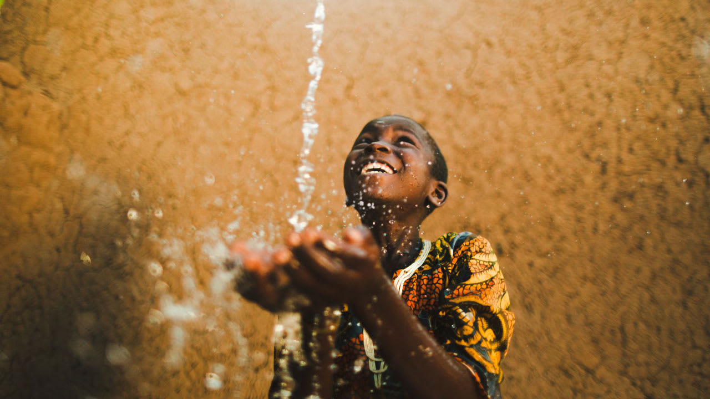
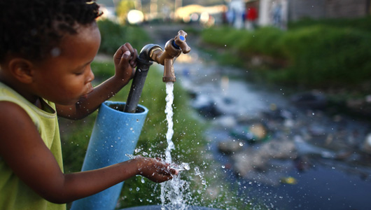
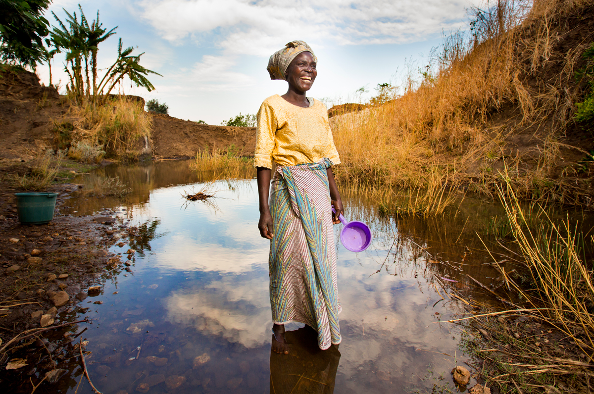
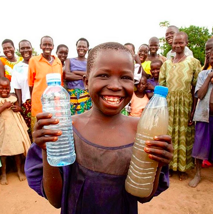
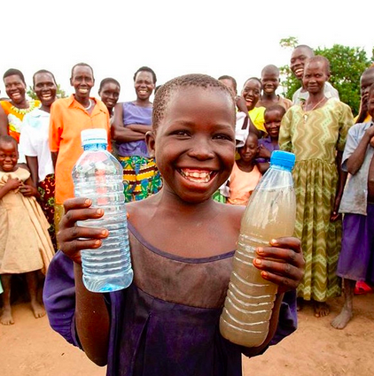
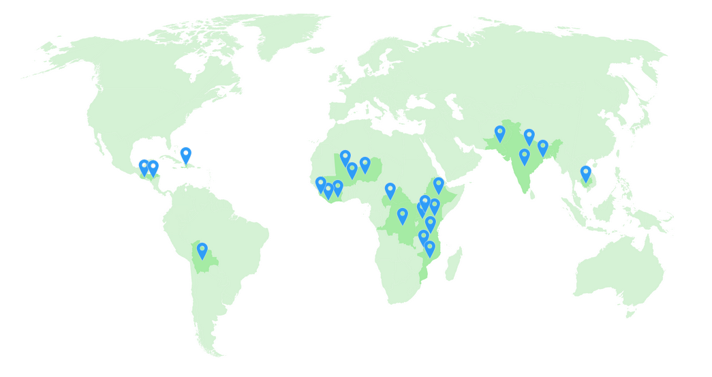
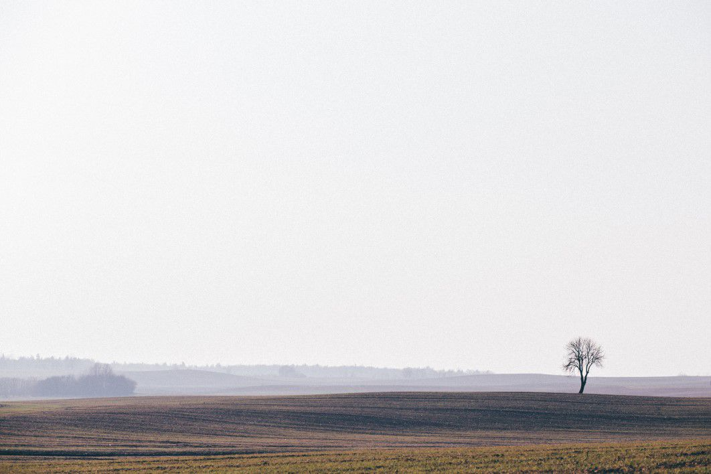

663 million people in the world live without clean water.
That’s nearly 1 in 10 people worldwide. Or, twice the population of the United States. When a community gets access to clean water, it can change just about everything. It can improve health, increase access to food, grow local economies, and help kids spend more time in school. The water crisis is huge, but it is solvable. I love Charity: Water because they work with local experts and community members to find the best sustainable solution in each place, whether it’s a well, a piped system, a BioSand Filter, or a system for harvesting rainwater. And with every water point they fund, their partners coordinate sanitation and hygiene training and establish a local Water Committee to help keep water flowing for years to come.
   

Travelled To
Charity:Water funds water programs in 26 countries around the globe - in Africa, Asia, Central and South America. Water scarcity, poverty, political stability and strong partner organizations all play a part in where they choose to work. They focus on providing rural communities with their first access to clean water.
 